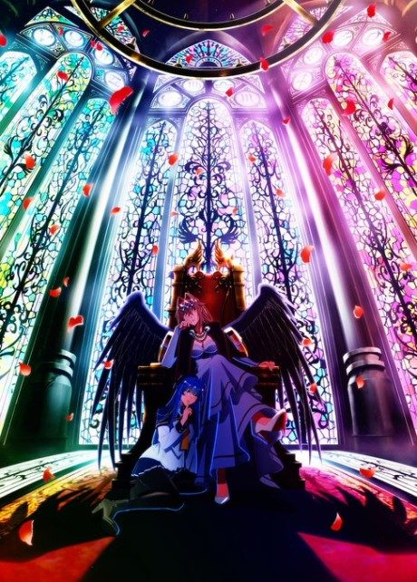
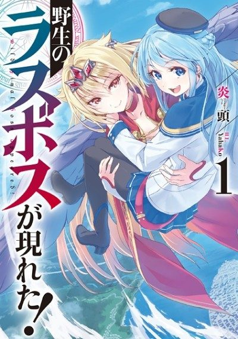
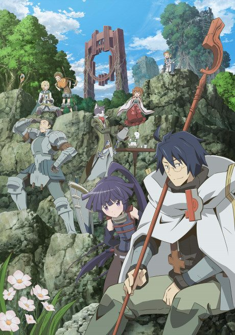
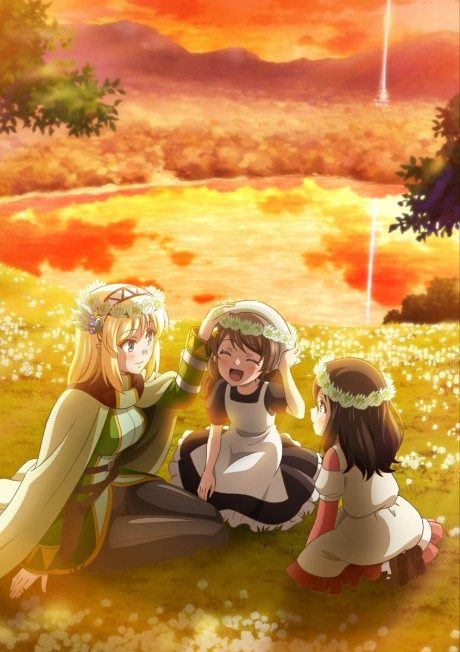
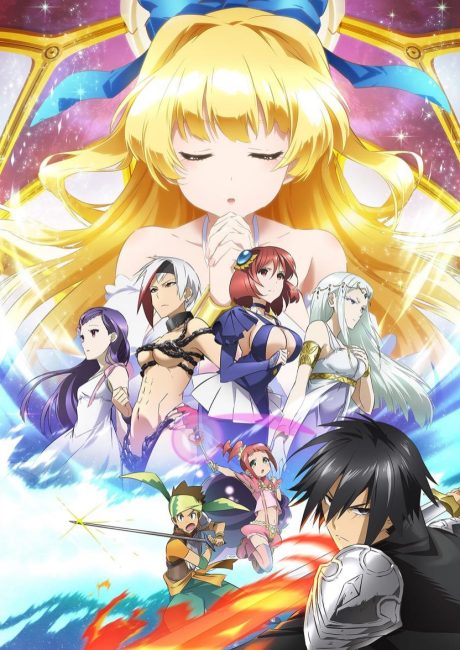
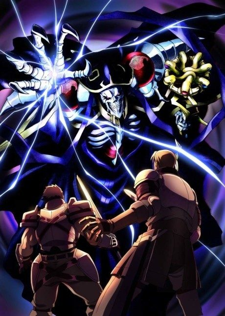
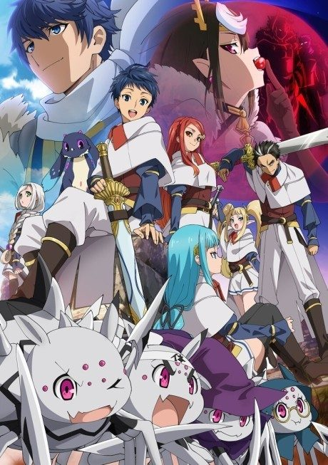
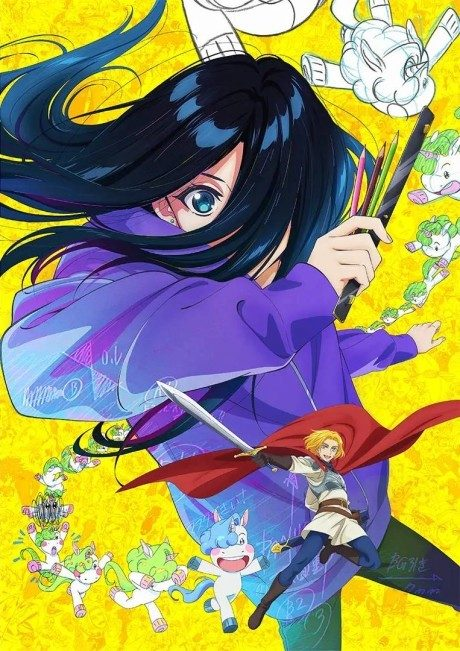
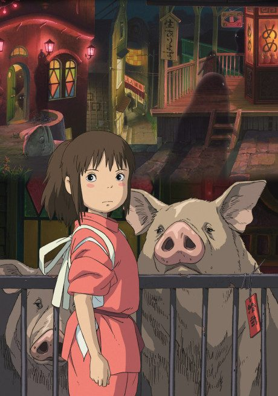
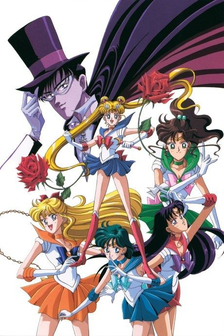

A Wild Last Boss Appeared!
野生のラスボスが現れた！
A gamer is pulled into the body of his game character, a winged tyrant who was defeated 200 years ago and is now remembered as a monster.
After the anime, read the light novel from Volume 4.
7.4AniList score
—Animeter, no votes yet
17episodes, 2 seasons
Rate it or report where you stopped
2 seasons, 17 episodes
In airing order. Episode numbers on this site count straight through every season, so season 2 starts at episode 13.
1
2025 · Web
A Wild Last Boss Appeared!
Episodes1–1212 ep
2
2026 · Web · Airing
A Wild Last Boss Appeared! Season 2
Episodes13–175 ep so far
Sources: AniList
More like A Wild Last Boss Appeared!

Unclear7.6
Manga Vol. 36.8 Manga Vol. 107.3
Manga Vol. 107.3
 Manga Ch. 819.1
Manga Ch. 819.1

Manga Vol. 57.3
Manga Vol. 157.7 Manga Vol. 157.6
Manga Vol. 157.6

Manga Vol. 67.2
Original7.3
Film8.6 Film8.5
Film8.5

Done7.6